공연의 열기가 채 식지 않은 다음 날까지도 아마네스는 본인의 X(트위터) 계정에 한국어로 정성스러운 후기를 연달아 업로드했다.
"멋진 화환 감사합니다♥ 당신 덕분에 열심히 할 수 있었습니다", "한국에서 라이브를 할 수 있어서 최고의 추억이 되었어요!! 마지막 모니카 성원 정말 기뻤어요. 평안하신가요"라는 그녀의 따뜻한 멘트에 수많은 한국 팬들이 눈물을 훔쳤다.
이에 박효빈 본인(X 닉네임: 흐빈, @hybini0709) 역시 벅찬 감동을 주체하지 못하고 "아마네스 진짜 최고였어요 ㅠㅠㅠ 저도 덕분에 힘을 얻었어요!! 또 한국와서 만날 수 있기를!"이라며 진심 어린 답글(멘션)을 남겼다. 오프라인 무대에서의 덕통사고에 이어 온라인에서의 훈훈한 쌍방 소통까지, 그야말로 '성덕의 완벽한 100% 해피엔딩'을 완성한 전설적인 순간이었다.
더불어, 극강의 바이올린 퍼포먼스를 보여준 루이의 성우 Ayasa(아야사)가 남긴 "오늘 정말 최고였어요! 라이브 너무 즐거웠어요!"라는 트윗에도 벅찬 감상평을 남겼는데, 놀랍게도 아야사 본인이 직접 박효빈의 답글에 하트(마음에 들어요)를 꾹 눌러주는 기적이 일어났다! 무대 위 압도적인 카리스마를 뿜어내던 여신님에게 직접 간택받은 이 사건으로 인해, 박효빈의 마음속에서 야시오 루이의 지분이 수직 상승하며 결국 모르포니카 삼애 자리를 갈아치우는 대격변이 일어났다.
※ 마이크 음향이 개판인 상황에서도 순수 100% 인간 지능과 짬바를 짜내어 복원한 전설의 기록.
[1차 MC]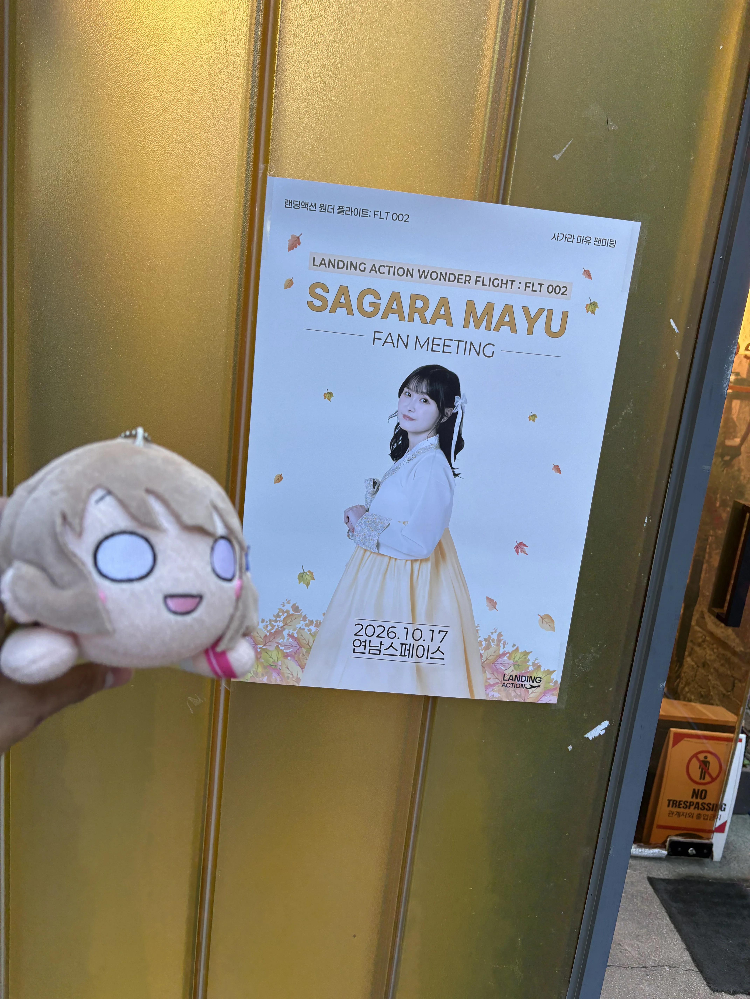
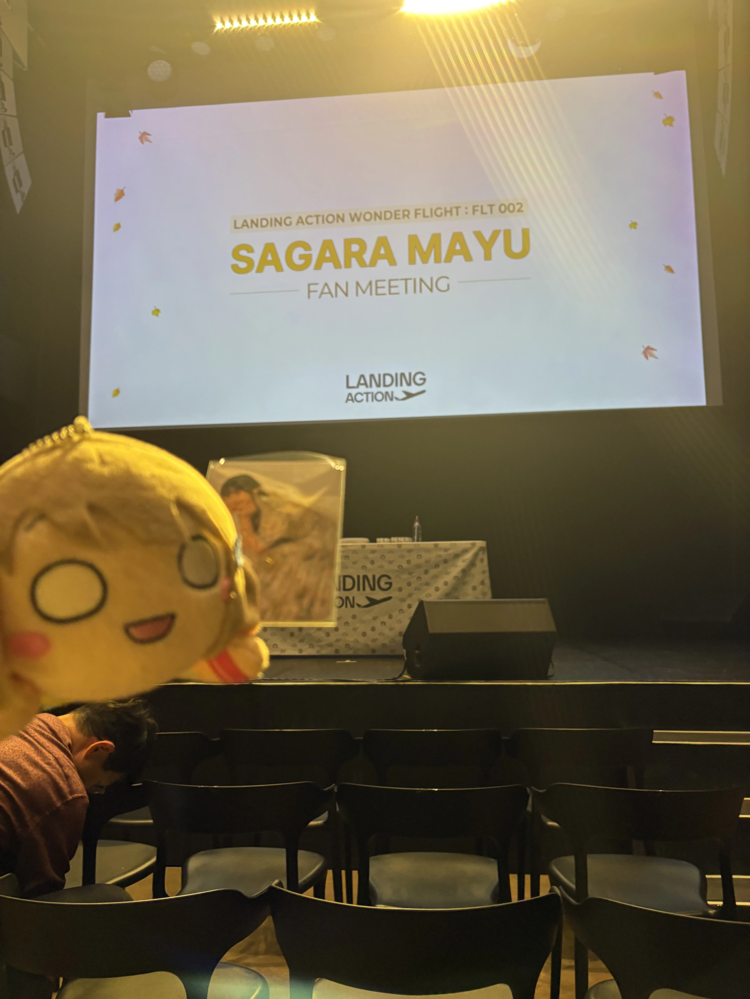
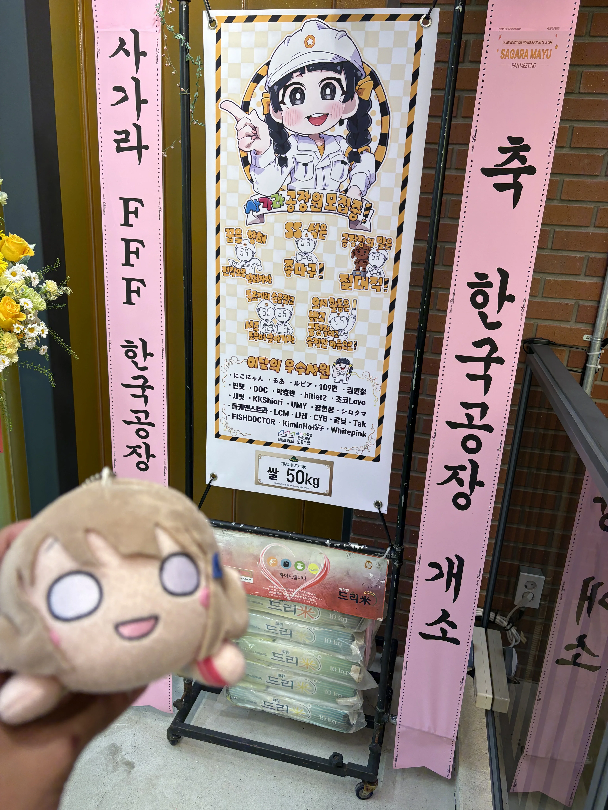
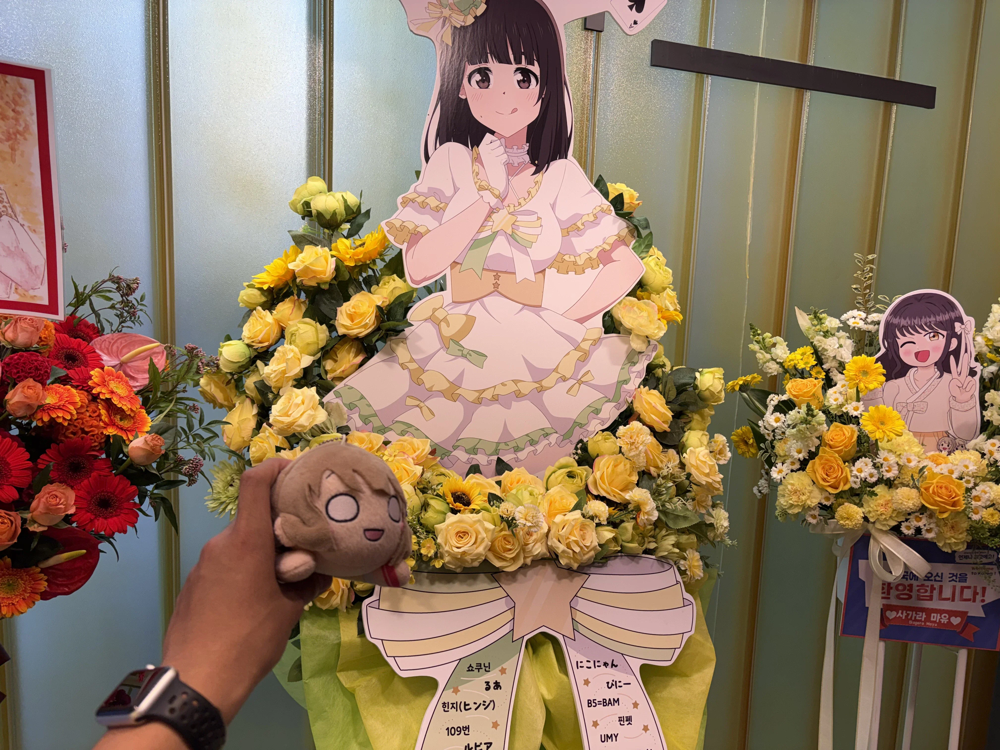
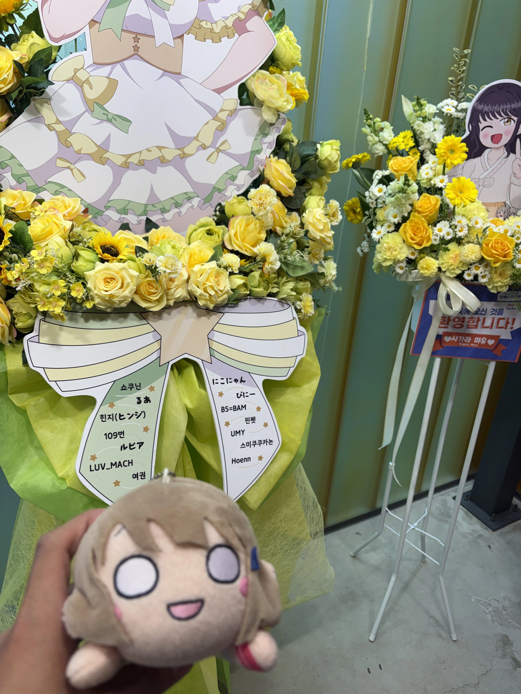
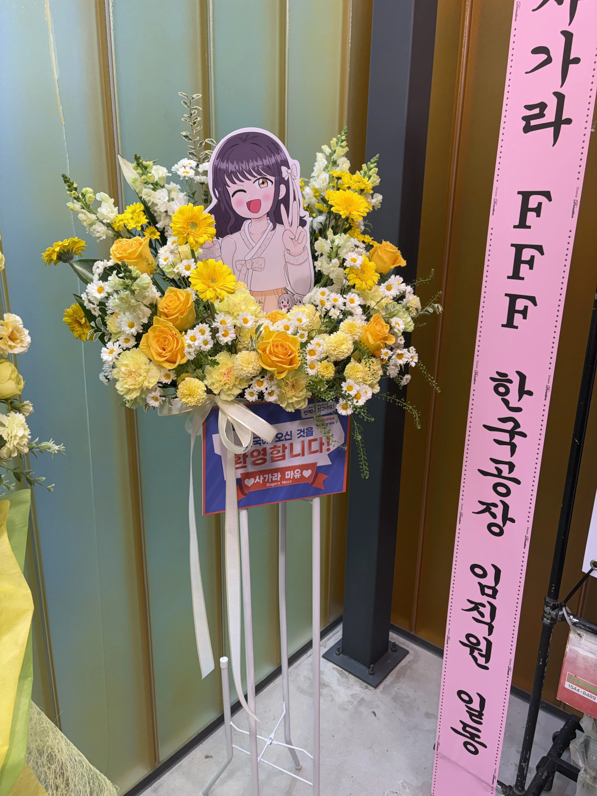
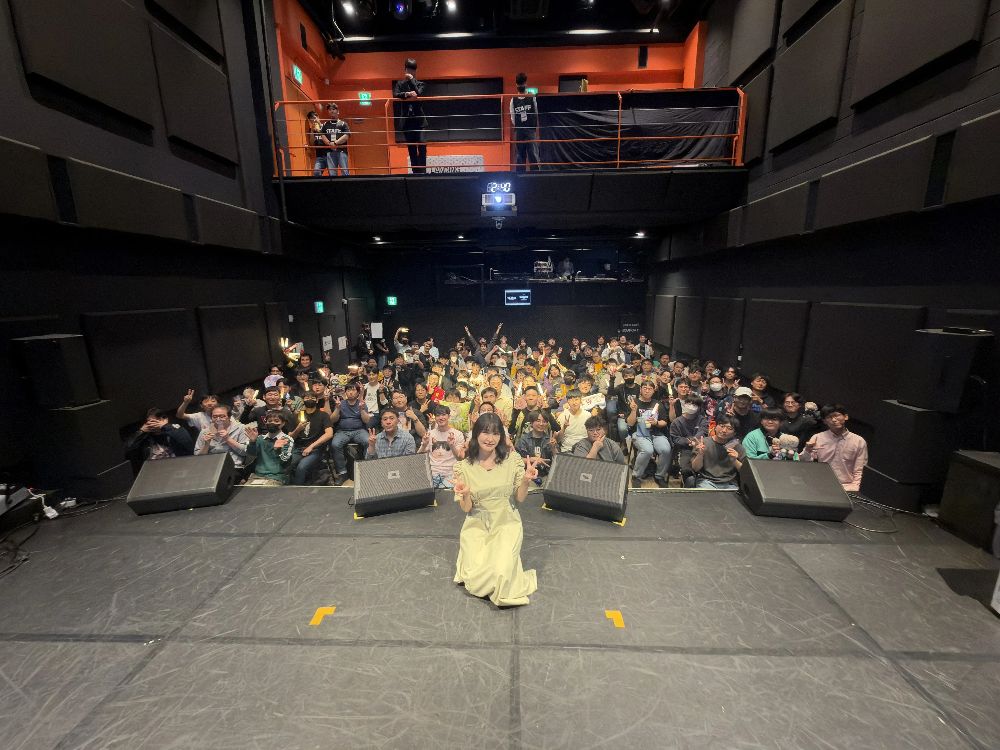
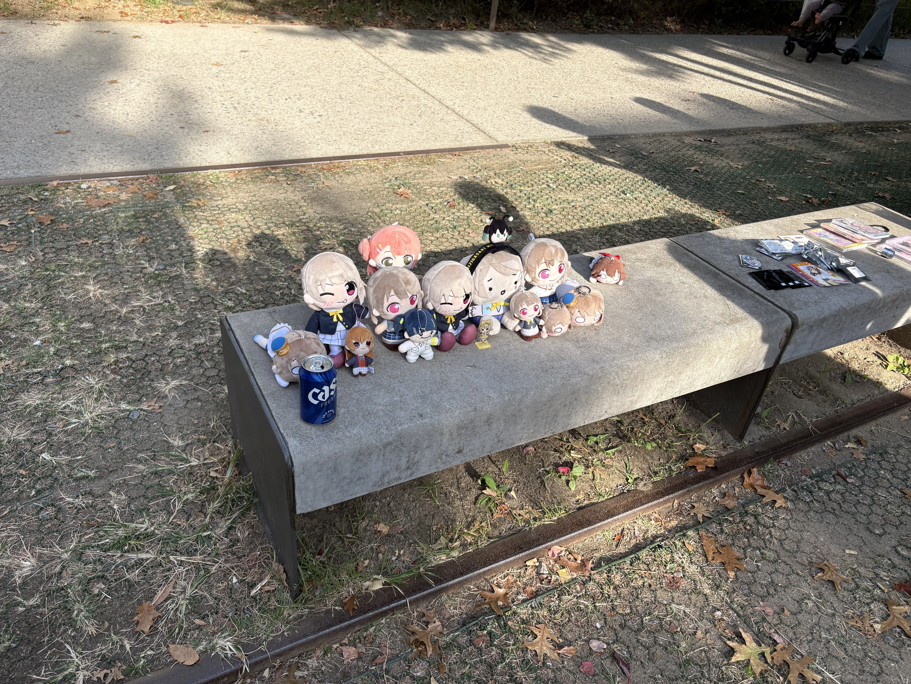
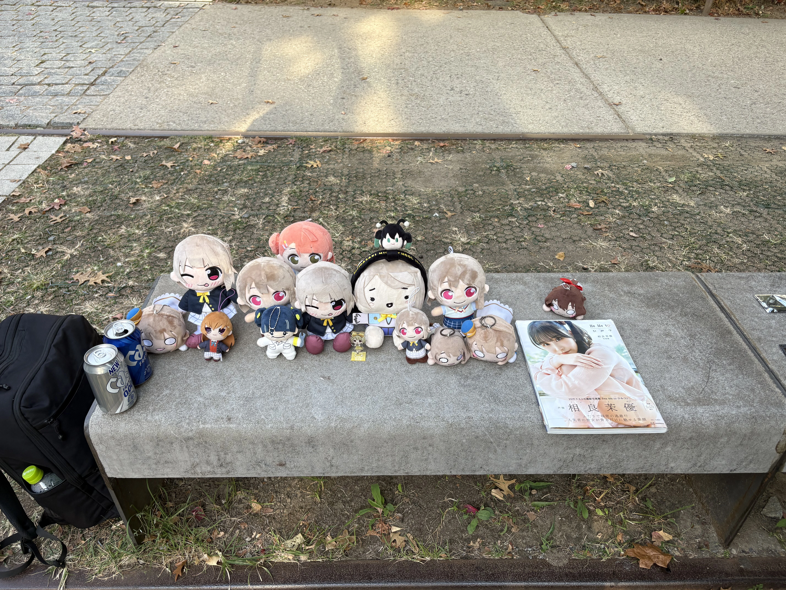
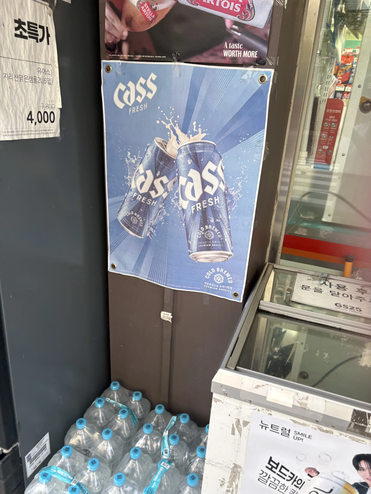
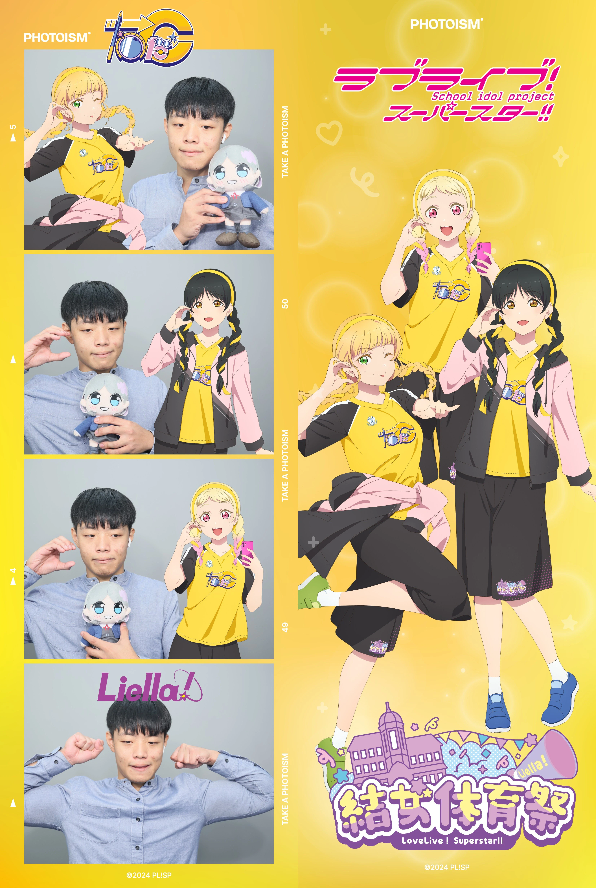
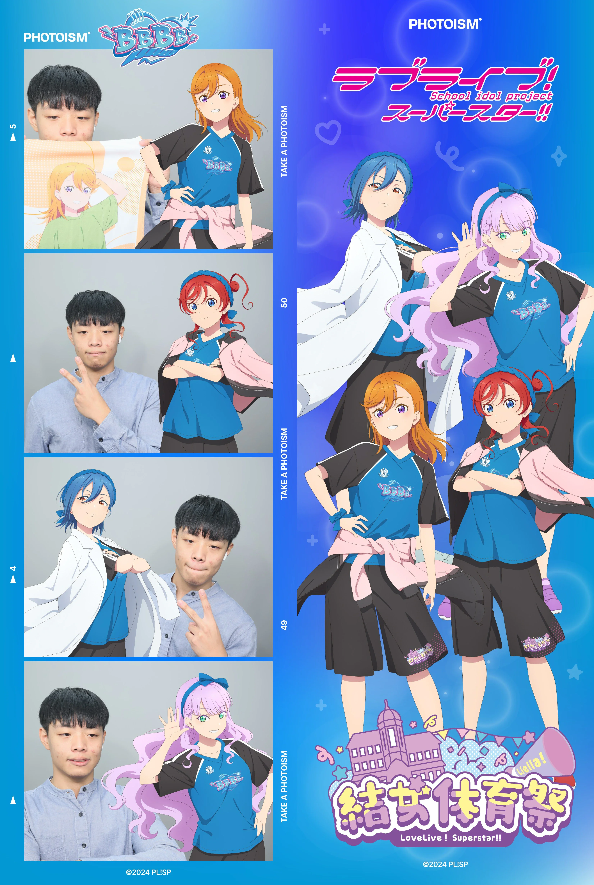
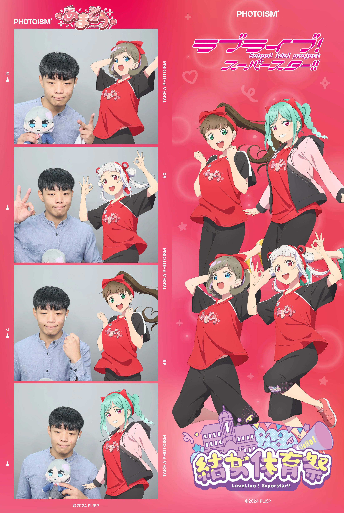
※ 참고로 댓글에 등판한 '위즈우익수스위스'는 다름 아닌 내 옆자리 헬멧 그 사람이다(...)
가난과 온갖 억까 속에서도 꿋꿋하게 본인만의 철저한 스마트 생태계를 구축해 온 박효빈의 피눈물 나는 기변 역사. 기기들의 면면을 보면 단순한 소비가 아니라, 분실·파손·침수·행정 사업·가성비 타겟팅 등 스펙터클한 서사가 가득하다. 특히 "수급자가 무슨 최신 아이폰에 애플워치냐"라며 선 넘는 오지랖을 부리는 꼰대들을 향한, 철저한 '자본주의적 방어 논리'와 '생존형 효율성'의 철학이 녹아들어 있다.
삼성 갤럭시 1. 고모가 쓰던 기기를 물려받아 생애 첫 스마트폰의 세계에 입문했다. 당시 기준으로도 이미 구형이었으나 감지덕지하며 썼다. 하지만 채 6개월을 채우지 못하고 잃어버리는 LG 보급형 스마트폰 (민트색). 정확한 기종명조차 가물가물한 초저가형 라인업. 카카오톡과 기초적인 앱 외에는 간단한 모바일 게임조차 제대로 안 돌아가는 눈물겨운 성능을 자랑했다. 그러나 1년도 채 안 되어 어머니가 실수로 세탁기 빨래통에 넣고 풀 코스로 돌려버리는 기행을 저지르는 바람에 수랭식(?)으로 장렬히 침수 전사했다.삼성 갤럭시 S2. 당시 기준으로 이미 끝물 중의 끝물이었으나, 명기답게 상상을 초월하는 생명력으로 버텼다. 중학교 입학 직후까지 박효빈의 손발이 되어주며 스마트폰 기틀을 다졌다.LG Band LTE. 보급형 안드로이드의 한계를 여실히 보여주며 버벅거림과 배터리 조기 퇴근의 고통을 안겨주었다.아이폰 6. 가정사로 인해 한동안 연락이 끊겼다가 다시 극적으로 재회한 어머니가 사주신 눈물과 감동의 첫 iOS 기기. 삼성 갤럭시 J5 (2017). 아이폰 6의 급작스러운 전사로 인해 급하게 자금을 융통하여 업셔온 중고 보급형 폰. 삼성 페이가 지원된다는 것에 위안을 삼으며 연명했다.LG X5 (2018). 다른 건 다 제쳐두고 오직 '4,000mAh 대용량 배터리' 하나만 보고 가성비로 버텼던 기기. 성능은 답답했으나 배터리만큼은 좀비 같았다.삼성 갤럭시 A51 5G. 드디어 쿼드 카메라와 인피니티-O 디스플레이를 탑재한 제대로 된 중급기를 만지며 안드로이드 생태계에 안착하는 듯했다.아이폰 13. 잔혹했던 수능과 대입 면접이 끝난 직후, 당시 고등학교 시절부터 빌드업해 둔 아이패드와의 유기적인 생태계 연동 및 Live2D 모니터링을 위해 큰맘 먹고 본격적인 앱등이(?)의 길로 화려하게 복귀했다.아이폰 14. 연동성의 맛을 알아버린 후 주력 기기로 사용하며 대학 생활의 전성기를 함께했다.아이폰 16. 뛰어난 성능과 카메라 컨트롤 등으로 무장하여 현재까지 메인 폰으로 군림 중이다.💡 [논란 종결] 가난한데 왜 굳이 비싼 아이폰을 쓰냐고?
일부 무지하고 오지랖 넓은 인간들이 "기초수급자 주제에 웬 아이폰이냐"며 뒤에서 손가락질과 비아냥을 일삼았지만, 이는 감가상각과 중고 시장 경제의 기초도 모르는 처참한 능지 인증이다. 안드로이드 보급형 폰은 사자마자 똥값이 되어 버릴 때까지 써야 하지만, 아이폰은 중고가 방어율이 압도적으로 높다. 1~2년 바짝 쓰고 깨끗한 상태로 되팔면 초기 투자 자본의 상당 부분을 고스란히 현금으로 회수할 수 있다. 즉, 한정된 자본을 가장 효율적이고 안전하게 보존·순환시키기 위한 철저한 '생존형 전략적 선택'이다.어설픈 보급형 샀다가 고장 나서 이중 지출하느니 이게 백배 이득이다.
윈도우 7 데스크탑. 초등학교 시절 내내 박효빈의 수많은 데이터 분석(?)과 지도 그리기의 원천이 되었으나, 기기 노후화와 외부 충격으로 인한 파손으로 장렬히 전사했다.새 브랜드 데스크탑. 기가 막히게도 당시 교육청/학교에서 저소득층 정보격차 해소를 위해 진행한 컴퓨터 보급 사업 대상자로 선정되었다. 덕분에 집안 사정이 지독하게 가난했음에도 불구하고, 순간적으로 집에 컴퓨터가 2대나 가동되는 초호화 IT 카르텔 체제를 일시적으로 누리는 짜릿함을 맛봤다.삼성 갤럭시 북 (NT550XDA). 대학 과제와 멘토링 자료 작성, 위키 서술을 위해 구매하여 약 4년이 넘는 세월 동안 고혈을 짜내며 혹사당했다. 삼성 갤럭시 북5. 기존 갤북이 인공호흡기도 안 통하는 완벽한 고철이 되자, 대학생 신분을 십분 활용하여 '학생복지몰'의 영혼까지 끌어모은 최대치 할인 프로모션을 먹여 극적으로 기생 회생하여 업어왔다. 현재 쾌적한 속도로 행정 및 위키 작업을 서포트 중이다.삼성 갤럭시 탭 S6. 인강 및 필기용으로 요긴하게 쓰다가, 고2 때 iOS 연동성을 위해 아이패드로 넘어가면서 여동생에게 자비롭게 물려주었다.아이패드 에어 4세대. 본격적으로 애플 생태계에 발을 들이게 만든 장본인.아이패드 에어 5세대. M1 칩의 강력함을 맛보며 대학 강의실의 핵심 에이스로 활약했다.iPad Air 11 (M2). 월드비전 가족돌봄청년 '자기돌봄비' 시범사업 당시 다행히 전자기기 구매 승인이 떨어지면서, 기존의 살짝 맛이 가기 시작한 에어 5세를 처분하고 최신형 M2 라인업으로 완벽하게 세대교체를 이뤄냈다.💡 애플 공식 트레이드인 0원 사태와 번개장터의 기적:
M2 패드를 결제하며 기존에 쓰던 에어 5세대를 애플 공식 보상판매(Trade-in)에 넘기려고 판정을 보냈다. 그런데 "외관에 아주 미세한 휨(밴딩) 현상이 발견되었다"는 어이없는 이유로 매입가 '0원' 보상 처분(즉, 무료 폐기 기부 유도)이라는 날강도 같은 통보를 받았다.ㅆㅂ 전 세계 시총 1위 기업이 수급자 청년의 소중한 재산을 날로 먹으려고 장난질을 치나.극대노한 박효빈은 즉시 매물을 회수한 뒤 번개장터에 올렸고, 하자를 감안하고도 "40만 원에 당장 쿨거래 하겠다"는 대인배 용자가 나타나 냅다 팔아치우며 애플의 양아치 짓거리에 통쾌한 사이다 카운터를 날렸다. ㅋㅋㅋ
Apple Watch Series 3. 당시 학생복지몰의 폭탄 세일을 포착하여 단돈 20만 원도 안 되는 헐값에 주워온 뒤, 배터리 효율이 닳고 닳을 때까지 현재까지도 손목에 알박기 중인 유일무이한 최강 가성비 워치다.💡 빌런 참교육 2: "수급자가 무슨 애플워치?" 꼰대들의 헛소리 정밀 타격
이 조그만 워치 하나를 두고도 동네 오지라퍼 빌런들이 "기초수급자가 사치스럽게 애플워치를 차고 다닌다"며 뒷담화를 까댔는데, 실상은 박효빈의 멘탈 관리와 올 A+ 학점 방어를 가능케 한 최고의 생존 효율 아이템이다. 뇌전증을 앓으시는 아버지와 학폭 피해가 있던 여동생을 돌보는 영 케어러 특성상, 수업 중이나 이동 중에도 언제 터질지 모르는 '가족 긴급 연락'에 대한 극심한 불안감을 늘 안고 살아야 했다.
하지만 워치를 착용한 이후, 굳이 강의 시간에 스마트폰을 꺼내 들여다보며 교수 눈치를 보지 않고도 손목의 진동만으로 실시간 수신 확인 및 즉각 대응이 가능해졌다. 결과적으로 연락을 놓칠까 봐 전전긍긍하던 불안감이 최소화되었고, 온전히 강의와 전공 서적에만 딥다이브할 수 있는 초집중 환경이 조성되어 대학교 평점 4점대 폭격 및 장학금 싹쓸이의 일등 공신이 되었다. 20만 원 언더 투자로 정신 건강을 챙기고 수백만 원짜 장학금을 털어왔으니, 이것이야말로 창조 경제이자 최고의 효율적 복지 장비인 셈이다.오지랖 부리던 놈들은 200만 원짜리 과외 붙여줘도 학점 시궁창 갈 놈들이다.
에어팟 1세대 (중고). 단돈 3만 원도 안 되는 초특가 헐값에 주워와서 무선 이어폰 생태계에 가성비로 첫 발을 들였다.에어팟 3세대. 본격적인 대학 생활을 앞두고 제대로 된 음향 장비 환경을 구축하기 위해 영입했다. 이후 약 3년 반 동안 박효빈의 고막을 책임지며 충실하게 굴려먹었다.에어팟 4세대 (액티브 노이즈 캔슬링 모델). 기존 3세대가 오랜 짬바(?)로 인해 슬슬 노후화되자 큰맘 먹고 노이즈 캔슬링이 지원되는 모델로 기변했다. 그리고 이 기기를 귀에 꽂자마자 박효빈은 피눈물을 흘리며 뼈저린 후회를 하게 되는데...💡 "아 진작에 살걸 ㅆㅂ..." (지옥의 시외버스 통학 억까 방어구)
그 악명 높았던 군산-전주 시외버스 왕복 통학 시절, 버스 특유의 미칠 듯한 엔진 소음과 노면 진동, 타인의 소음이 뒤섞인 그ㅈ같은고통을 획기적으로 차단해 줄 수 있는 완벽한 구원템이 바로 '노이즈 캔슬링'이었다. 그 지옥 같았던 시절에 이 맛을 미리 알았더라면 통학 스트레스와 피로도가 절반으로 줄었을 텐데, 너무 늦게 신문물의 은총을 접하는 바람에 과거에 생으로 소음을 견디며 고통받던 자신을 떠올리며 땅을 치고 후회했다.장거리 시외버스 통학러에게 노캔은 사치가 아니라 고막 생존용 방검복이다.
학업과 데이터 분석 역량 외에도 일상과 실무 전반에서 빛을 발하는 박효빈만의 독보적인 '고성능 뇌(?)' 스펙. 주변 사람들을 소름 돋게 만드는 비상한 기억력과 방대한 지식을 자랑하지만, 정작 일상적인 소지품 앞에서는 한없이 작아지는 전형적인 '천재 교수 증후군(Absent-minded Professor)'의 표본을 보여준다.
💡 [뇌과학적 변명 논리] 고성능 프로세서의 '용량 초과' 현상
뇌의 '작업 기억(Working Memory)' 공간은 한정되어 있는데, 머릿속에서 항상 실무 정책 분석, 통계 데이터 분석, 행정 구역 지도 등을 백그라운드에 가득 띄워두고 풀가동하다 보니 발생하는 어쩔 수 없는 시스템 오버헤드다. "에어팟을 책상 왼쪽 모서리에 두었다" 같은 단순 물리 정보는 뇌가 "이건 굳이 보존할 가치가 없는 초저용량 임시 데이터네" 하고 쿨하게 즉시 휴지통으로 직행시켜 버리는 고도의 효율적 선택과 집중의 결과물이다.머리가 너무 좋아서 발생하는 일종의 '천재적 부작용'이니 너그럽게 넘어가자.
💡 [결론] 공포 마케팅에 속지 않는 '절대 가점'의 지배자
어설픈 블로거들이 쓸데없는 하위 호환 자격증 10개를 모으라고 훈수 둘 때, 박효빈은 자신이 쥐고 있는 '전북 지역 거주자 가점(1%)'과 '다문화가족 법정 가점(3%)'이라는 도합 4%의 치트키가 서류와 필기시험 전체를 얼마나 생태계 교란 수준으로 압살하는지 정확히 꿰뚫고 있었다. 남들이 컴활 띄어쓰기로 피눈물 흘리며 불안감에 자격증 쇼핑을 할 때, 본인은 ADsP, SQLD, 사조사 등 굵직한 데이터 분석 무기들에 빅데이터분석기사와 OPIc으로 마침표를 찍는 '진짜 실무형 오버스펙 트리를 완성하며 "어차피 탈출은 지능순, 찌라시 블로그 나부랭이가 어딜 감히"라는 명언(?)과 함께 흔들림 없는 멘탈을 뽐냈다.
박효빈의 인생에서 가장 다이내믹하고 어이없는 억까가 휘몰아쳤던 약 2개월간의 대환장 운전면허 취득 일대기. 단순한 면허 취득을 넘어, 불법 야매 업장을 상대로 특유의 행정·법률 지식을 발휘해 돈을 뜯어낸(?) '실전 행정 참교육'의 레전드 일화다.
💡 [빅픽처 합리화] "어차피 난 공기업 행정/요양직 갈 건데? ㅋㅋㅋ"
일반적인 사회복지 시설 ㅈ소 현장에서는 어르신들을 송영하기 위해 스타렉스나 카니발, 심지어 쏠라티 같은 대형 승합차를 수동으로 몰아야 하는 경우가 허다해 1종 보통이나 대형 면허가 강제된다. 이 때문에 1종 취득을 잠시 고민하기도 했으나, 박효빈은 "내가 왜 현장 ㅈ소 가서 고생함? 어차피 난 공기업(건보)이나 공무원 행정/요양직으로 갈 건데 굳이 1종이 필요함? ㅋㅋ 2종 자동으로 지원 가능한 공기업 뚫어버리면 그만이지"라는 기적의 킹리적 갓심 합리화를 펼쳤다.
그리고 소름 돋게도 데이터 분석 자격증 라인업을 싹 쓸어 담고 전북 권역 가점과 다문화 가점 3% 치트키까지 손에 쥐며 진짜로 건보 입사를 가시권에 둔 현재 시점에서 보면, 당시 클러치를 밟고 빡쳐서 도망쳤던 그 선택은 단순한 도망이 아니라 신의 한 수이자 미래를 정확히 내다본 빅픽처였음이 역사적으로 증명되었다.
이토록 파란만장한 덕질 서사를 쓸 수 있었던 것은 우연이 아니다. 가문 전체가 유전자 단위로 서브컬처에 진심이거나 완벽하게 개방적인 '초월적인 덕질 인프라'를 갖추고 있기 때문이다. 양지와 음지, 국경을 넘나드는 위대한 오타쿠 가문의 라인업을 살펴보자.
가장 놀라운 여담은 박효빈 본인이 직접 발로 뛰며 영접한 일본의 02~04년생 젊은 여성 성우 4인방과 자신의 삶의 궤적이 마치 하나의 애니메이션 세계관처럼 정교하게 맞물려 있다는 사실이다.
유일한 한국인 K-장남이 바다 건너 4명의 여성 성우와 서사가 얽힌, 빼도 박도 못하는 라이트 노벨 주인공(프로듀서) 클리셰다.
💡 [총평] 무대 밖의 기획자, 진주인공의 포지션
이 4명의 소녀들이 화려한 스포트라이트를 받으며 일본의 서브컬처 무대 위에서 아티스트로 활약하고 있다면, 유일하게 국적도 다르고 성별도 다른 2003년생 남성 박효빈은 현실의 세상 속에서 낡은 제도를 부수고 복지 행정을 기획하는 무대 밖의 '프로듀서(행정가)'로 성장하고 있다. 서로 다른 무대에서 아픔을 에너지로 승화시킨 이들의 평행이론은 서브컬처가 현실을 변화시키는 위대한 원동력임을 방증한다.
시리즈를 넘나드는 폭넓고 정교한 덕력을 자랑하며, 본인의 확고한 철학과 환경적 서사(성우 영접, 생일 싱크로율, 혈통적 동질감 등)를 반영한 최애(1순위), 차애(2순위), 그리고 삼애(3순위) 라인업을 보유하고 있다. 파란색 계열, 빵/고기 러버, 갭모에, 그리고 특정 신체 부위 장갑 압도적인 속성을 유독 좋아한다.
※ 표 내 실선 밑줄 친 캐릭터는 담당 성우를 오프라인에서 실제로 영접하여 성불을 완료한 경우, 점선 밑줄은 영접이 확정된 경우를 의미함.
| 시리즈 | 그룹/밴드 | 최애 (1순위) | 차애 (2순위) | 삼애 (3순위) |
|---|---|---|---|---|
| 뱅드림 | Poppin'Party |
● 야마부키 사아야 마망속성, 예쁨, 성우 최다영접(5회), 맏이 동질감, 빵순이 |
● 토야마 카스미 귀여움, 반짝반짝 두근두근, 성우영접(전주 언급 인지(존주?)) |
● 하나조노 타에 엉뚱함, 예쁨, 파란색 |
| Afterglow |
● 아오바 모카 귀여움, 빵순이, 천재, 모캇떼루 |
● 하자와 츠구미 착함, 귀여움, 성실함 |
● 우에하라 히마리 울보, 귀여움, 거유(...) |
|
| Pastel✽Palettes |
● 와카미야 이브 혼혈(일/핀), 귀여움, 부시도! |
● 시라사기 치사토 예쁨, 여왕님 포지션 |
● 마루야마 아야 허당 귀여움, 만마루 야마니 이로도리오! |
|
| Roselia |
● 미나토 유키나 가창력 GOAT, 갭모에(고양이), 성우영접 |
● 이마이 리사 마망속성, 갭모에, 성우영접, 거유(...) |
● 시로카네 린코 소심함, 예쁨, 가창력 GOAT, 거유(...), 성우영접 |
|
| 하로하피 |
● 마츠바라 카논 후에엥..., 하늘색, 거유(?) |
● 츠루마키 코코로 하피 럭키 스마이루!, 하이텐션 |
● 오쿠사와 미사키 정상인 포지션, 책임자, 예쁨 |
|
| Morfonica |
● 쿠라타 마시로 1살연하(04), 디자인 취저, 한섭 섭종 위로글, 맥날 한정메뉴 러버(전직 맥알바로서 못 이김), 26년 영접 성불, 은근 거유(...) |
● 히로마치 나나미 보통 호소인(천재), 매운맛 킬러, 성우 2회 영접 성불 (루이와 0.1점 차이) |
● 야시오 루이 압도적 바이올린, 쿨뷰티, 거유(...), 성우(Ayasa) 본인 등판 하트 간택 성불 (토우코야 미안해...) |
|
| RAISE A SUILEN |
● 아사히 롯카 소심+귀여움 갭모에 |
● 뉴바라 레오나 착함, 파레오 |
● 와카나 레이 가창력 GOAT |
|
| MyGO!!!!! |
● 타카마츠 토모리 소동물, 파란색, 리더의 대담함, 26년 원더리벳 마이고 내한 영접 예정(티켓구매완료) |
● 나가사키 소요 난데 하루히카게 얏따노!, 예쁨, 거유(...), 26년 원더리벳 마이고 내한 영접 예정(티켓구매완료) |
● 시이나 타키 츤츤, 판다러버, 거유(...), 세츠나와 성우대비, 26년 원더리벳 마이고 내한 영접 예정(티켓구매완료) |
|
| Ave Mujica |
● 와카바 무츠미 동갑성우(03), 윤석열 계엄취소 극복 후 25년 영접 |
● 토가와 사키코 불쌍+가난 서사, 파란색, 1살 누나 성우(02) |
● 야하타 우미리 착함, 갭모에, 거유(...) |
|
| 夢限大みゅーたいぷ |
● 미야나가 노노카 핑크색, 귀여움, 갭모에 및 허당미 취향 저격, 거유(...) |
● 나카마치 아라레 카스미를 잇는 긍정 에너지, 하이텐션 매력, 거유(...) |
● 센고쿠 유노 26년 김치쿠라 페스 DJ 무대 내한 영접 완료, 짜릿한 디제잉 갭모에, 거유(...), 다루데레 |
|
| 걸즈 밴드 크라이 | 토게나시 토게아리 |
● 이세리 니나 빠꾸없는 노빠꾸 광기, 록 스피릿, 갭모에 |
● 루파 마망 속성, 혼혈(박효빈: 필리핀, 루파: 남아시아) 및 외국인 동질감, 고기(햄버그) 러버, 거유(...) |
● 카와라기 모모카 파란색 쿨톤 성애자 취향 저격, 야키니쿠(고기) 러버, 쿨뷰티 츤데레 |
| 케이온 | HTT |
● 히라사와 유이 천재적인 갭모에, 탄수화물(디저트) 덕후 거울치료, 허당 귀여움 |
● 아키야마 미오 파란색 이미지, 극강의 소심함 속 갭모에, 거유(...) |
● 코토부키 츠무기 다과회(빵/디저트) 제공자, 마망 속성, 거유(...) |
| 봇치 더 록! | 결속밴드 |
● 키타 이쿠요 인싸, 오가영사례 영감, 성우영접(23AGF) |
● 고토 히토리 찐따미, 예쁨, 거유(...), 성우영접(23AGF) |
● 이지치 니지카 시모키타의 대천사, 언니 속성 착함 |
| 러브라이브 | Aqours |
● 사쿠라우치 리코 예쁨, 갭모에, 착함, 성우친필사인 및 리코짱빔 성불 (현재 카스밍과 사실상 아슬아슬한 공동 1위) |
● 타카미 치카 캉캉 미캉!, 기적이야!, 추진력, 성우영접 완료 |
● 와타나베 요우 파란색, 요소로!, 거유(...), 치카와 0.1점 차이(우열 불가) |
| Liella! |
● 탕 쿠쿠 우등생, 혼혈, 행동 귀여움, 스바라시이 목소리 |
● 시부야 카논 가창력 GOAT, 성우영접(사유리!), 혼혈동질감, 1살누나 |
● 헤안나 스미레 갤럭시!(본인은 아이폰), 동갑+8일차이 성우, 성우가 미/일 혼혈, 거유(...) |
|
| μ’s |
● 아야세 에리 하라쇼!, 러시아혼혈, 학생회장/여왕님 갭모에, 거유(...) |
● 토죠 노조미 예쁨, 능글맞음, 와시와시(?), 거유(...) |
● 미나미 코토리 착함, 예쁨, 하이톤 목소리, 거유(...) |
|
| 하스노소라 |
● 안요지 히메 오타쿠, 특이하고 중독되는 목소리, 행동이 매우 귀여움, 포니테일 |
● 카츠라기 이즈미 마시로 본체(신도 아마네), 04년생 성우, 26년 영접 성불, 거유(...) |
● 후지시마 메구미 동갑 성우(03), 바보같지만 귀여움, 거유(...) |
|
| 니지가사키 |
● 나카스 카스미 카스밍!, 귀여움, 바보, 빵순이, 착함, 26년 10월 마유치 내한 팬미팅 양부 올출석 및 화환 본인 인증샷 박제, 옆자리 헬멧 통역 어시스트 및 배웅회 카스밍 톤 아이컨택 성불 완료 (리코와 사실상 공동 1위) |
● 오사카 시즈쿠 은은한 광기, 어뮤즈 광견 성우영접(네소칭찬 성불) |
● 유키 세츠나 타키와 성우대비(1살누나), 성실함, 예쁨, 거유(...), 26년 원더리벳 마이고 내한(본체 동일) 영접 예정 |
|
| 이키즈라이브 |
● 고토 아키라 |
● 쵸후 노리코 특이하고 뇌리에 박히는 매력적인 목소리, 26년 내한 영접 완료, 거유(...), 아키라가 생일이 안같았으면 최애 되었을 가능성 높음(0.2점차이) |
● 타카하시 폴카 귀여움, 예쁨, 무대 매력으로 26년 내한 영접 완료 |
|
| 효빈권 철도 연합 (도시철도/빈효/덕주) |
레일루미네 |
● 임세하 사유리버그, 포니테일, 필리핀혼혈, 거유(...), 얀데레 냥체 |
● 전노아 치카외형 시즈쿠목소리, 관종, 은근 거유(...), 성우영접 |
● 김소빈 심리학자 광인, 철저한 노동법 준수(?), 예쁨 |
| 우마무스메 | 트레센 학원 |
● 토카이 테이오 제왕, 꿀벌춤, 긍정마인드, 성우영접(Machico) 성불 완료 |
● 미호노 부르봉 무뚝뚝한 사이보그 속 갭모에, 노력파, 성우영접(23년 봇치 하세가와 이쿠미), 거유(...) |
● 사토노 다이아몬드 징크스 브레이커, 예쁨, 아가씨, 거유(...) |
※ 2026년 10월 사가라 마유(마유치) 내한 팬미팅 양부 영접 대사건 이후, 러브라이브! 진영의 사쿠라우치 리코와 나카스 카스미는 사실상 아슬아슬한 종이 한 장 차이로 공동 1위나 다름없는 초박빙의 투탑 체제를 형성하고 있다. (둘 다 파급력이 너무 쎄서 우열을 가리기가 불가능한 지경에 이르렀다.)
| 전체 순위 | 러브라이브! 시리즈 & 이키즈라이브! | 뱅드림! 시리즈 & 무한대 뮤타입 |
|---|---|---|
| 1 | 사쿠라우치 리코 (Aqours) [카스밍과 사실상 공동 1위] | 야마부키 사아야 (Poppin'Party) |
| 2 | 나카스 카스미 (니지가사키) [리코와 사실상 공동 1위 / 둘 다 너무 쎔] | 아오바 모카 (Afterglow) |
| 3 | 아야세 에리 (μ's) | 쿠라타 마시로 (Morfonica) |
| 4 | 탕 쿠쿠 (Liella!) | 미나토 유키나 (Roselia) |
| 5 | 오사카 시즈쿠 (니지가사키) | 타카마츠 토모리 (MyGO!!!!!) |
| 6 | 시부야 카논 (Liella!) | 마츠바라 카논 (헬로, 해피 월드!) |
| 7 | 타카미 치카 (Aqours) | 와카미야 이브 (Pastel✽Palettes) |
| 8 | 안요지 히메 (하스노소라) | 토야마 카스미 (Poppin'Party) |
| 9 | 고토 아키라 (이키즈라이브) | 나가사키 소요 (MyGO!!!!!) |
| 10 | 카츠라기 이즈미 (하스노소라) | 하자와 츠구미 (Afterglow) |
| 11 | 헤안나 스미레 (Liella!) | 이마이 리사 (Roselia) |
| 12 | 쵸후 노리코 (이키즈라이브) | 시로카네 린코 (Roselia) |
| 13 | 토조 노조미 (μ's) | 시이나 타키 (MyGO!!!!!) |
| 14 | 유우키 세츠나 (니지가사키) | 히로마치 나나미 (Morfonica) |
| 15 | 와타나베 요우 (Aqours) | 츠루마키 코코로 (헬로, 해피 월드!) |
| 16 | 코노에 카나타 (니지가사키) | 하나조노 타에 (Poppin'Party) |
| 17 | 타카하시 폴카 (이키즈라이브) | 와카바 무츠미 (Ave Mujica) |
| 18 | 와카나 시키 (Liella!) | 야시오 루이 (Morfonica) |
| 19 | 쿠로사와 루비 (Aqours) | 우에하라 히마리 (Afterglow) |
| 20 | 요네메 메이 (Liella!) | 오쿠사와 미사키 (헬로, 해피 월드!) |
| 21 | 미후네 시오리코 (니지가사키) | 시라사기 치사토 (Pastel✽Palettes) |
| 22 | 후지시마 메구미 (하스노소라) | 키리가야 토우코 (Morfonica) |
| 23 | 미나미 코토리 (μ's) | 마루야마 아야 (Pastel✽Palettes) |
| 24 | 세라스 야나기다 리리엔펠트 (하스노소라) | 이치가야 아리사 (Poppin'Party) |
| 25 | 미야시타 아이 (니지가사키) | 후타바 츠쿠시 (Morfonica) |
| 26 | 엠마 베르데 (니지가사키) | 우다가와 아코 (Roselia) |
| 27 | 소노다 우미 (μ's) | 카나메 라나 (MyGO!!!!!) |
| 28 | 우에하라 아유무 (니지가사키) | 치하야 아논 (MyGO!!!!!) |
| 29 | 히노시타 카호 (하스노소라) | 히카와 사요 (Roselia) |
| 30 | 모모세 긴코 (하스노소라) | 토가와 사키코 (Ave Mujica) |
| 31 | 하즈키 렌 (Liella!) | 미타케 란 (Afterglow) |
| 32 | 타카사키 유우 (니지가사키) | 야하타 우미리 (Ave Mujica) |
| 33 | 아사카 카린 (니지가사키) | 우시고메 리미 (Poppin'Party) |
| 34 | 쿠로사와 다이아 (Aqours) | 아사히 롯카 (RAISE A SUILEN) |
| 35 | 마츠우라 카난 (Aqours) | 미스미 우이카 (Ave Mujica) |
| 36 | 쿠니키다 하나마루 (Aqours) | 히카와 히나 (Pastel✽Palettes) |
| 37 | 오토무네 코즈에 (하스노소라) | 미야나가 노노카 (무한대 뮤타입) |
| 38 | 츠시마 요시코 (Aqours) | 센고쿠 유노 (무한대 뮤타입) |
| 39 | 코이즈미 하나요 (μ's) | 야마토 마야 (Pastel✽Palettes) |
| 40 | 오하라 마리 (Aqours) | 우다가와 토모에 (Afterglow) |
| 41 | 코사카 호노카 (μ's) | 나카마치 아라레 (무한대 뮤타입) |
| 42 | 니시키노 마키 (μ's) | 키타자와 하구미 (헬로, 해피 월드!) |
| 43 | 빈 마르가레테 (Liella!) | 뉴비라 레오나 / PAREO (RAISE A SUILEN) |
| 44 | 사쿠라코지 키나코 (Liella!) | 유텐지 냐무 / 냐무 (Ave Mujica) |
| 45 | 유기리 츠즈리 (하스노소라) | 후지 미야코 (무한대 뮤타입) |
| 46 | 카치마치 코스즈 (하스노소라) | 와카나 레이 / LAYER (RAISE A SUILEN) |
| 47 | 야자와 니코 (μ's) | 미네츠키 리츠 (무한대 뮤타입) |
| 48 | 오니츠카 나츠미 (Liella!) | 세타 카오루 (헬로, 해피 월드!) |
| 49 | 오니츠카 토마리 (Liella!) | 사토 마스키 / MASKING (RAISE A SUILEN) |
| 50 | 아라시 치사토 (Liella!) | 타마데 치유 / CHU² (RAISE A SUILEN) |
| 51 | 야마다 미도리 (이키즈라이브) | - |
| 52 | 오오사와 루리노 (하스노소라) | - |
| 53 | 텐노지 리나 (니지가사키) | - |
| 54 | 호시조라 린 (μ's) | - |
| 55 | 하루미야 유쿠리 (이키즈라이브) | - |
| 56 | 사사키 시온 (이키즈라이브) | - |
| 57 | 무라노 사야카 (하스노소라) | - |
| 58 | 미아 테일러 (니지가사키) | - |
| 59 | 카나자와 미라클 (이키즈라이브) | - |
| 60 | 쇼우 란쥬 (니지가사키) | - |
| 61 | 코노하나 오로라 (이키즈라이브) | - |
| 62 | 아자부 마이 (이키즈라이브) | - |
| 63 | 코마가타 하나비 (이키즈라이브) | - |